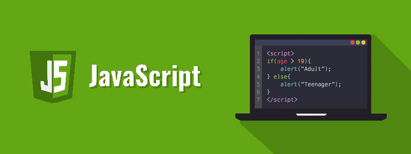
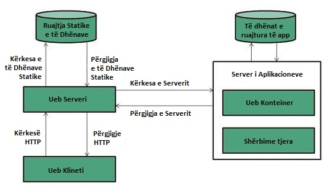
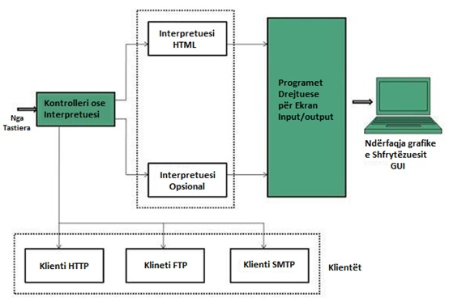
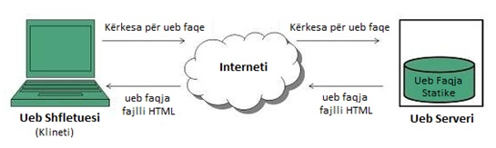
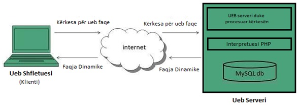

JavaScript – Njohuri themelore
JavaScript është gjuhë programimi ose gjuhë skriptimi për Ueb, e cila mund të përditësoj dhe ndryshojë si HTML-në ashtu edhe CSS-në, e gjithashtu mund të kryej llogaritje, manipulojë dhe validoj të dhënat.

Skriptimi nga ana e klientit u referohet skripteve që ekzekutohen brenda shfletuesit tuaj të internetit. JavaScript është krijuar për të shtuar ndërveprim dhe efekte dinamike në ueb-faqe duke manipuluar përmbajtjen që vije nga një ueb-server.
JavaScript u zhvillua fillimisht si LiveScript nga Netscape në mes të viteve 1990-ta. Më vonë u riemërua në JavaScript në vitin 1995 dhe u bë një standard ECMA në vitin 1997. Tani JavaScript është gjuha standarde e skriptimit nga ana e klientit për aplikacione të bazuara në ueb, dhe përkrahet nga pothuajse të gjithë ueb- shfletuesit të disponueshëm sot, të tilla si Google Chrome, Mozilla Firefox, Apple Safari, etj.
JavaScript është një gjuhë e orientuar në objekte, dhe gjithashtu ka disa ngjashmëri në sintaksë me gjuhën programuese Java. Megjithatë, JavaScript nuk ka lidhshmëri me Java në asnjë mënyrë.
JavaScript mirëmbahet zyrtarisht nga ECMA (European Computer Manufacturers Association – Shoqata Evropiane e Prodhuesve të Kompjuterëve) si ECMAScript. ECMAScript 6 (ose ES6) është versioni i fundit i standardit ECMAScript.
Çfarë mund të bëni me JavaScript?
Shumë gjëra mund të bëni me JavaScript.
- Mund të modifikoni përmbajtjen e një ueb-faqeje duke shtuar ose hequr elemente.
- Mund të ndryshoni stilin dhe pozicionin e elementeve në një ueb-faqe.
- Mund të monitoroni ngjarje (events) si klikimi i miut, hover efekti, etj. dhe të reagosh ndaj tij.
- Mund të kryeni dhe kontrolloni tranzicionet dhe animacionet.
- Mund të krijoni dritare pop-up për të shfaqur informacione ose mesazhe paralajmëruese tek përdoruesi.
- Mund të kryeni operacione të bazuar nga futja e të dhënave nga përdoruesit dhe t’i shfaqni rezultatet.
- Mund të validoni shënimet e përdorueseve përpara se t’i paraqisni ato në server.
Lista nuk përfundon këtu, ka shumë gjëra të tjera interesante që mund të bëni me JavaScript. Ju do të mësoni për të gjitha në detaje në kapitujt e ardhshëm.
Ueb shërbimet
Ueb serveri
Ueb serveri është një kompjuter ku ruhet përmbajtja e uebit. Në thelb ueb serveri përdoret për të ruajtur (hostuar) ueb-sajtet, gjithashtu ekzistojnë ueb serverë të tjerë për të hostuar lojëra, hapësira ruajtëse, FTP, email, etj.
Shënim: Ueb sajti është koleksion i ueb faqeve ndërsa ueb serveri është një softuer që i përgjigjet kërkesës për burime të uebit.
Puna e ueb serverit
Ueb serveri i përgjigjet kërkesës së klientit në njërën nga dy mënyrat e mëposhtme:
- Dërgimi i fajllit tek klienti të shoqëruar nga URL-ja e kërkuar.
- Gjenerimi i përgjigjes duke thirrur një skriptë dhe duke komunikuar me bazën e të dhënave.

Pikat kryesore
- Kur klienti dërgon kërkesë për një ueb faqe, ueb serveri kërkon për faqen e kërkuar, nëse gjendet faqja e kërkuar, atëherë ai do t'ia dërgojë atë klientit me një përgjigje HTT
- Nëse ueb faqja e kërkuar nuk gjendet, ueb serveri do të dërgojë një HTTP response: Error 404 Not found.
- Nëse klienti ka kërkuar për disa burime tjera, ueb serveri do të kontaktojë me ueb serverin e aplikacionit dhe bazën e të dhënave për të krijuar përgjigjen HTTP.
Ueb serverët kryesorë që janë sot në dispozicion:
- Apache HTTP Server
- Internet Information Services (IIS)
- Sun Java System Web Server, etj.
Ueb shfletuesi
Ueb Shfletuesi (Web Browser) është një softuer aplikativ që na lejon të shohim dhe të eksplorojmë informacione në ueb. Shfrytëzuesi mund të kërkojë çdo ueb faqe duke futur vetëm një URL në shiritin e adresave.
Ueb Shfletuesi mund të paraqes tekst, audio, video, animacion, etj. Është përgjegjësi e ueb shfletuesit të interpretojë tekstin dhe komandat që përmbahen në ueb faqe.
Më parë ueb shfletuesit ishin të bazuar në tekst ndërsa tani në ditët e sotme ueb shfletuesit bazohen gjithashtu në grafikë ose në zë. Më poshtë janë ueb shfletuesit më të zakonshëm të disponueshëm sot:
|
Shfletuesi |
Prodhuesi |
|
Microsoft Edge |
Microsoft |
|
Google Chrome |
|
|
Mozilla Firefox |
Mozilla |
|
Opera |
Opera Software |
|
Safari |
Apple |
Arkitektura
Ka shumë ueb shfletues të disponueshëm në treg. Të gjithë ata interpretojnë dhe shfaqin informacione në ekran, megjithatë aftësitë dhe struktura e tyre ndryshojnë në varësi të implementimit. Por komponenta më themelore që të gjithë ueb shfletuesit duhet të shfaqin janë radhitur më poshtë:
- Kontrolleri/ Dispeçeri
- Interpretuesi
- Programet e Klientit
Kontrolleri punon si njësi kontrolli në CPU. Ai merr inputet (hyrjet) nga tastiera ose miu, i interpreton ato dhe bën që shërbime të tjera të funksionojnë në bazë të inputit që merr.
Interpretuesi pranon informacionin nga kontrolleri dhe ekzekuton udhëzimet rresht për rresht. Disa interpretues janë të detyrueshëm ndërsa disa janë opsional. Për shembull, interpretuesi i programit HTML është i detyrueshëm dhe interpretuesi java është opsional.
Programi i Klientit përshkruan protokollin specifik që do të përdoret për tu qasë në një shërbim të veçantë. Në vijim janë programet e klientit që përdoren zakonisht:
- HTTP
- SMTP
- FTP, etj.

Ueb faqja
Ueb faqja është një dokument i disponueshëm në rrjetin botëror (world wide web – www). Ueb faqet ruhen në ueb server dhe mund të shikohen duke përdorur një ueb shfletues.
Një ueb faqe mund të përmbajë shumë informacione duke përfshirë tekst, grafikë, audio, video dhe hiperlidhje. Këto hiperlidhje janë lidhje me ueb faqet tjera.
Koleksioni i ueb faqeve të lidhura në një ueb server njihet si uebsajt. Ekziston një Lokator Unik i Burimeve Uniformë (Uniform Resourse Locator – URL) që shoqërohet me secilën ueb faqe.
Ueb faqet statike
Ueb Faqet Statike njihen gjithashtu si faqe të sheshta ose stacionare. Ato lexohen në shfletuesin e klientit ashtu siç janë të ruajtura saktësisht në ueb serverin. Ueb faqe të tilla përmbajnë vetëm informacione statike. Shfrytëzuesi mundet vetëm të lexojë informacionin por nuk mund të bëjë ndonjë modifikim ose të ndërveprojë me informacionin.
Ueb faqet statike krijohen duke përdorur vetëm HTML. Ueb Faqet statike përdoren vetëm atëherë kur informacioni nuk kërkohet më për t'u ndryshuar.

Ueb faqe dinamike
Ueb faqja dinamike tregon informacione të ndryshme në momente të ndryshme kohore. Është e mundur të ndryshoni një pjesë të një ueb faqe pa e ngarkuar përsëri tërë ueb faqen. Kjo bëhet e mundur duke përdorur teknologjinë Ajax.
Ueb faqe dinamike nga ana e serverit
Krijohet duke përdorur skriptingun nga ana e serverit. Ekzistojnë parametra të skriptimit nga ana e serverit që përcaktojnë se si të ndërtoni një ueb faqe të re, e cila gjithashtu përfshin vendosjen e më shumë procesimeve nga ana e klientit.
Ueb faqe dinamike nga ana e klientit
Këto faqe krijohen duke përdorur skriptimin nga ana e klientit siç është JavaScript, dhe pastaj përcillen në Modelin e Objektit të Dokumentit (Document Object Model – DOM).

Gjuhët Skriptuese
Një gjuhë skriptimi është gjuhë programimi që interpretohet, që do të thotë se përkthehet në kodin e makinës kur ekzekutohet kodi. Gjuhët e skriptimit përdoren shpesh për skripte të shkurtra në vend të programeve të plota kompjuterike. PHP, Perl dhe Python janë shembuj të zakonshëm të gjuhëve skriptuese.
Gjuhë skriptimi (e njohur gjithashtu si skripting, ose skriptë) përcaktohet qartë si një seri urdhrash që janë në gjendje të ekzekutohen pa pasur nevojë për kompajlim . Derisa të gjitha gjuhët e skriptimit janë gjuhë programimi, jo të gjitha gjuhët e programimit janë gjuhë skriptimi.
Gjuhët e skriptimit përdorin një program të njohur si interpretues – përkthyes për të përkthyer urdhrat dhe që interpretohen drejtpërdrejt nga kodi burimor, duke mos kërkuar një hap kompjalimi . Nga ana tjetër, gjuhët e tjera të programimit, mund të kërkojnë që një kompajler të përkthejë urdhrat në kodin e makinës para se të ekzekutojë ato urdhra.
Një gjuhë e interpretuar e programimit është një gjuhë e krijuar për të ekzekutuar kodin burimor direkt dhe pa nevojën e kompajlimit të një programi në instruksionet e gjuhën së makinës. Një interpretues do të ekzekutojë programin duke përkthyer deklaratat (statements) në një seri prej një ose më shumë nënrutinave përpara se t'i përkthejë ato përfundimisht në një gjuhë tjetër, siç është kodi i makinës.
Në gjuhët programuese të kompajluara, një program kompajlues përkthen kodin e shkruar prej një gjuhe programimi të nivelit të lartë në një gjuhë të nivelit më të ulët në mënyrë që programi të ekzekutohet. Programet C ose Java zakonisht duhet të kompajlohen së pari në mënyrë që të ekzekutohen. Dy kompajler të njohur janë Eclipse për Java dhe gcc për C dhe C++.
Skriptimi nga ana e serverit krahas skriptimit nga ana e klientit
Ekzistojnë dy lloje të gjuhëve të skriptimit: nga ana e serverit dhe nga ana e klientit. I vetmi ndryshim i rëndësishëm midis të dyve është se i pari kërkon një server për ta proceduar.
Gjuhët e skriptimit nga ana e serverit ekzekutohen në një ueb server. Kur një klient dërgon një kërkesë, serveri përgjigjet duke i dërguar përmbajtjen përmes HTTP. Në të kundërt, gjuhët e skriptimit nga ana e klientit ekzekutohen në anën e klientit - në shfletuesin e tyre të internetit.
Përfitimi i skripteve nga ana e klientit është se ato mund të reduktojnë kërkesat në server, duke lejuar që ueb faqet të lexohen më shpejt. Ndërsa, një përfitim i rëndësishëm i skripteve nga ana e serverit është se ato nuk janë të dukshme nga publiku siç janë skriptet nga ana e klientit.
Kur vendosni se në cilën mënyrë t’ju qaseni një projekti, mbani në mend se skriptimi nga ana e klientit është më i fokusuar në ndërfaqen e përdoruesit (user interface) dhe funksionalitet. Në të kundërt, skriptimi nga ana e serverit fokusohet në procedim më të shpejtë, qasje në të dhëna dhe zgjidhjen e gabimeve.
Shembuj të gjuhëve të skriptimit nga ana e serverit
Më poshtë janë dhënë shembuj të gjuhëve të skriptimit nga ana e serverit.
|
Gjuhë |
Komente |
|
PHP |
Gjuha më e njohur nga ana e serverit që përdoret në ueb. |
|
ASP.NET |
Biblioteka (framework) e ueb aplikacioneve e zhvilluar nga Microsoft. |
|
Node.js |
Mund të ekzekutohet në një mori platformash, përfshirë Windows, Linux, Unix, Mac, etj. |
|
Java |
Përdoret në gjithçka, nga Bluetooth stereoja e makinës suaj deri tek aplikacionet e NASA-s. |
|
Ruby |
Dinamik. Përqendrohet shumë tek thjeshtësia. |
|
Perl |
Një grimë kombinimi midis C, skriptave shell, AWK dhe sed. |
|
Python |
E shkëlqyeshme për fillestarët për të mësuar. Përdor kodin më të shkurtër. |
Shembuj të gjuhëve të skriptimit nga ana e klientit
Më poshtë janë shembuj të gjuhëve skriptuese nga ana e klientit.
|
Gjuhë |
Komente |
|
HTML |
Themeli i zhvillimit të ueb-it. |
|
CSS |
Përmirëson pamjen dhe grafikun në faqet e ueb shfletuesin tuaj. |
|
JavaScript |
Megjithëse tipik nga ana e klientit, herë pas here mund të përdoret edhe nga ana e serverit. |
Hyrje në JavaScript
Në këtë material mësimor do të mësoni se si të krijoni një ueb-faqe me JavaScript.
Këtu, ju do të mësoni se sa e lehtë është të shtoni ndërveprimin (ineraktivitet) në një ueb-faqe duke përdorur JavaScript. Por, para kësaj, duhet që të keni disa njohuri pune në HTML dhe CSS.
Shtimi i JavaScript në faqet tuaja të uebit
Zakonisht ekzistojnë tri mënyra për të shtuar JavaScript-in në një ueb-faqe:
- Vendosja e kodit JavaScript brenda në HTML në mes etiketave
<script>dhe</script>. - Krijimi i një fajlli të jashtëm JavaScript me ekstensionin .js dhe më pas të krijohet një lidhje përmes atributit
srcnga etiketa<script>. - Vendosja e kodit JavaScript direkt brenda një etikete HTML duke përdorur atributet speciale të etiketave të tilla si
onclick, onmouseover, onkeypress, onload, etj.
Vendosja e kodit JavaScript brenda në HTML
Ju mund ta vendosni kodin JavaScript direkt në ueb-faqet tuaja duke e vendosur atë në mes etiketave <script> dhe </script>. Etiketa <script> i tregon shfletuesit se udhëzimet që përmbahen duhet të të interpretohen si kod i ekzekutueshëm dhe jo HTML.
Shembull:
<!DOCTYPE html>
<html>
<head>
<meta charset="UTF-8">
<title>Vendosja e JavaScript-it</title>
</head>
<body>
<script>
var persh = "Përshëndetje Botë!";
document.write(persh); // Shënohet: Përshëndetje Botë!
</script>
</body>
</html>Kodi JavaScript në shembullin e mësipërm thjesht shtyp një mesazh me tekst në ueb-faqe.
Thirrja e një fajlli të jashtëm JavaScript
Ju gjithashtu mund ta vendosni kodin tuaj JavaScript në një fajll të veçantë me ekstensionin .js, dhe pastaj thirrni atë fajll në dokumentin tuaj përmes atributit src të etiketës <script>, kësisoj:
<script src="js/main.js"></script>Kjo është e dobishme nëse doni të njëjtin kod JavaScript të disponueshëm ta shfrytëzoni për shumë dokumente. Kjo ju kursen nga përsëritja e së njëjtës detyrë në secilën ueb-faqe, dhe e bën ueb-sajtin tuaj shumë të lehtë për tu mirëmbajtur.
Shembull:
// Një funksion që e shfaqë mesazhin
function thuajTung() {
alert("Përshëndetje Botë!");
}
// Thirr funksionin duke klikuar në buton
document.getElementById("btn").onclick = thuajTung;Tani, mund ta thërrisni këtë fajll të jashtëm JavaScript në ueb-faqe duke përdorur etiketën <script>, kësisoj:
Shembull:
<!DOCTYPE html>
<html>
<head>
<meta charset="UTF-8">
<title>Përfshirja e fajllit të jashtëm JavaScript</title>
</head>
<body>
<button type="button" id="btn">Kliko</button>
<script src="js/main.js"></script>
</body>
</html>Shënim: Zakonisht kur një fajll i jashtëm JavaScript shkarkohet për herë të parë, ai ruhet në memorien e shfletuesit (ashtu si imazhet dhe fajllat CSS), kështu që nuk do të duhet të shkarkohet disa herë nga ueb-serveri, kësisoj i bën ueb-faqet të lexohen më shpejt.
Vendosja e kodit JavaScript në linjë (inline)
Ju gjithashtu mund të vendosni kodin JavaScript brenda duke e futur atë direkt brenda një etikete HTML duke përdorur atributet speciale të etiketave të tilla si onclick, onmouseover, onkeypress, onload, etj.
Sidoqoftë, duhet të evitoni vendosjen e sasisë së madhe të kodit JavaScript inline, pasi rrëmon HTML-në tuaj me JavaScript dhe e bën të vështirë mirëmbajtjen e kodit tuaj JavaScript.
Shembull:
<!DOCTYPE html><html>
<head>
<meta charset="UTF-8">
<title>JavaScript inline</title>
</head>
<body>
<button onclick="alert('Përshëndetje Botë!')">Kliko</button>
</body>
</html>Shembulli i mësipërm do t'ju tregojë mesazhin “Përshëndetje Botë!” në një dritare pop-up alarmuese nëse klikojmë në buton.
Këshillë: Mbani gjithmonë përmbajtjen dhe strukturën e ueb-faqes suaj (d.m.th. HTML-në) të ndarë nga prezantimi (CSS) dhe sjellja (JavaScript).
Pozicionimi i kodit JavaScript brenda dokumentit HTML
Elementi <script> mund të vendoset në seksionin <head>, ose <body> të një dokumenti HTML. Por në mënyrë ideale, skriptet duhet të vendosen në fund të seksionit të body-it, pak para etiketës mbyllëse </body>, kjo do të bëjë që ueb-faqet tuaja të lexohen më shpejt, pasi parandalohen pengesat e inicimit fillestar të faqes.
Secila etiketë <script> bllokon procesin e paraqitjes së faqes derisa të ketë shkarkuar dhe ekzekutuar plotësisht kodin JavaScript, kështu që vendosja e tyre në seksionin e kokës (d.m.th. brenda elementit <head>) pa ndonjë arsye të vlefshme, do të ndikojë ndjeshëm në performancën e ueb-sajtit tuaj.
Këshillë: Mund të vendosni më shumë se një element <script> në një dokument të vetëm HTML. Sidoqoftë, ato procesohen sipas radhës në të cilën shfaqen në dokument, nga lart poshtë.
Diferenca në mes skriptimit nga ana e klientit dhe nga ana e serverit
Gjuhët e skriptimit nga ana e klientit (client-side) si JavaScript, VBScript, etj., interpretohen dhe ekzekutohen nga shfletuesi i internetit, ndërsa gjuhët e skriptimit në anën e serverit (server-side) si PHP, ASP, Java, Python, Ruby, etj., ekzekutohen në ueb-server dhe rezultatin e dërgojnë tek shfletuesi - klienti në formatin HTML.
Skriptimi nga ana e klientit ka shumë përparësi krahasuar me qasjen tradicionale të skriptimit nga ana e serverit. Për shembull, mund të përdorni JavaScript për të kontrolluar nëse përdoruesi ka futur të dhëna të pavlefshme në fushat e formës dhe të tregoni njoftime për gabime gjatë futjes së të dhënave në përputhje me rrethanat në kohë reale para se t’i dorëzoni formularin me shënime në ueb-serverin për vlerësimin përfundimtar të të dhënave dhe përpunimin e mëtejshëm, në mënyrë që të parandaloni përdorimet e panevojshme të brezit lëshues të rrjetit dhe shfrytëzimin e panevojshëm të resurseve të serverit.
Gjithashtu, përgjigja nga një skriptë nga ana e serverit është më e ngadaltë në krahasim me një skriptë nga ana e klientit, sepse skriptet nga ana e serverit procesohen në kompjuterin në largësi dhe jo në kompjuterin lokal të shfrytëzuesit.
Sintaksa e JavaScript-it
Sintaksa e JavaScript-it është tërësia e rregullave që përcaktojnë një program JavaScript të strukturuar siç duhet.
Një JavaScript konsiston prej udhëzimeve (statements) të JavaScript-it që vendosen brenda etiketave HTML <script> </script> në një ueb-faqe, ose brenda fajllit të jashtëm me ekstension .js.
Shembulli i mëposhtëm tregon se si duken udhëzimet në JavaScript:
Shembull:
var x = 5;
var y = 10;
var shuma = x + y;
document.write(shuma); // Shënohet vlera e variablësNdjeshmëria e shkronjave në JavaScript (Case Sensitivity)
JavaScript është i ndjeshëm në varësi a përdoren shkronjat e mëdha apo të vogla. Kjo do të thotë që variablat, fjalët kyçe të gjuhës, emërtimet e funksioneve dhe identifikuesit e tjerë duhet të shënohen gjithmonë me shkronja të mëdha apo të vogla dhe në mënyrë të njëjtë edhe të identifikohen më pas.
Për shembull, variabla myVar duhet të shënohet myVar jo MyVar ose myvar. Në mënyrë të ngjashme, emri i metodës getElementById() duhet të shënohet saktësisht, jo kësisoj getElementByID().
Shembull:
var myVar = "Përshëndetje Botë!";
console.log(myVar);
console.log(MyVar);
console.log(myvar);Nëse hapni konsolën e shfletuesit duke shtypur tastin f12 në tastierë, do të shihni një rresht kësisoj: "Uncaught ReferenceError: MyVar is not defined".
Komentet në JavaScript
Një koment është thjesht një linjë teksti që injorohet plotësisht nga interpretuesi JavaScript. Komentet zakonisht shtohen me qëllim të sigurimit të informacionit shtesë që ka të bëjë me kodin burimor. Kjo jo vetëm që do t'ju ndihmojë të kuptoni kodin tuaj kur kujdeseni pas një periudhë kohore por edhe të tjerët që punojnë me ju në të njëjtin projekt.
JavaScript mbështet komente me një rresht si dhe me shumë rreshta. Komentet në një rresht fillojnë me dy viza të pjerrëta përpara (//), e ndjekur nga teksti i komentit.
Shembull:
// Ky është programi im i parë në JavaScript
document.write("Përshëndetje Botë!");Ndërsa, një koment në disa rreshta fillon me një vizë të pjerrtë dhe një yll (/*) dhe përfundon me një yll dhe një vizë të pjerrtë (*/).
Shembull:
/* Ky është programi im i parë
në JavaScript */
document.write("Përshëndetje Botë!");Variablat
Variablat janë thelbësore për të gjitha gjuhët programuese. Variablat përdoren për të ruajtur të dhënat, si tekste, numra, etj. Të dhënat ose vlera e ruajtur në variabla mund të vendosen, përditësohet dhe të lexohet sa herë që të jetë e nevojshme. Në përgjithësi, variablat janë emra simbolikë për vlerat.
Mund të krijojmë një variabël me fjalën kyçe var, ndërsa operatori i barazimit (=) përdoret për t'i caktuar vlerë një variable, si kjo: var varEmri = vlera;
Shembull:
var emri = "Filan Fisteku";
var mosha = 17;
var eshteMartuar = false;Këshillë: Gjithmonë jepni emra kuptimplotë variablave tuaja. Për më tepër, për emërtimin e variablave që përmbajnë shumë fjalë, zakonisht përdoret e ashtuquajtura metoda camelCase. Në këtë konventë e gjithë fjalia pas së parës duhet të ketë shkronjat e para të mëdha, p.sh. emriGjateVariables.
Në shembullin e mësipërm kemi krijuar tri variabla, të parës ju është caktuar një vlerë string (tekst), të dytës ju është caktuar një numër, ndërsa të fundit ju është caktuar një vlerë boolean. Pra, konsiderojmë se variablat mund të përmbajnë tipe të ndryshme të të dhënave.
Në JavaScript, variablat mund të deklarohen gjithashtu pa ju caktuar ndonjë vlerë fillestare. Kjo është e dobishme për variablat që supozohet të marrin vlera nga futja e të dhënave të shfrytëzuesve (inputs).
Shembull:
// Deklarimi i variblës
var emriPerdoruesit;
// Caktimi i vlerës
emriPerdoruesit = "Filan Fisteku";Shënim: Në JavaScript, nëse një variabël është deklaruar, por nuk i është caktuar një vlerë e qartë (eksplicite), në mënyrë automatike ju caktohet vlera undefined.
Deklarimi i variablave të shumëfishta përnjëherë
Përveç deklarimit të variablave një nga një, ju gjithashtu mund të deklaroni shumë variabla dhe të vendosni vlerat e tyre fillestare në një urdhëresë të vetme. Çdo variabël ndahet me presje, siç demonstrohet në shembullin vijues:
Shembull:
// Deklarimi i variablave të shumëfishta
var emri = "Filan Fisteku", mosha = 17, eshteMartuar = false;
/* Deklarimi i gjatë mund të ndahet në disa
rreshta për të përmirësuar lexueshmërinë */
var emri = "Filan Fisteku",
mosha = 17,
eshteMartuar = false;Fjalët kyçe let dhe const ES6
ES6 ofron dy fjalë kyçe të reja let dhe const për deklarimin e variablave.
Fjala kyçe const shërben saktësisht njësoj si let, përveç që variablave të deklaruara duke përdorur fjalën kyçe const nuk mund të ju ricaktohet vlera më vonë në kod.
Shembull:
// Deklarimi i variablave
let emri = "Filan Fisteku";
let mosha = 17;
let eshteNxenes = true;
// Deklarimi i konstantës
const PI = 3.14;
console.log(PI); // 3.14
// Tentim për t’ju ricaktu vlera
PI = 10; // gabimNdryshe nga var, që deklaron variablat e përcaktuar brenda funksionit (function-scoped variables), të dy fjalët kyçe let dhe const deklarojnë variabla, të përcaktuara brenda bllokut ({ }). Fushëveprimi i bllokut do të thotë që krijohet një fushë e re midis një palë kllapave të mëdha { }.
Shënim: Fjalët kyçe let dhe const nuk mbështeten nga shfletuesit e vjetër si p.sh. IE10.
Konventat për emërtimet e variablave në JavaScript
Këto janë rregullat për emërtimin e një variable në JavaScript:
- Emri i variablës duhet të fillojë me një shkronjë, nënvizim (_), ose me shenjë dollari ($).
- Emri i variablës nuk mund të fillojë me një numër.
- Emri i variablës mund të përmbajë vetëm karaktere alfa-numerike (A-z, 0-9) dhe nënvizime.
- Emri i variablës nuk mund të përmbajë hapësira.
- Emri i variablës nuk mund të jetë një fjalë kyçe që i përkasin JavaScript-it ose një fjalë e rezervuar JavaScript.
Shënim: Emrat e variablave në JavaScript janë të ndjeshëm në varësi nga shkronjat e mëdha dhe të vogla (case sensitive), do të thotë që $myvar dhe $myVar janë dy variabla të ndryshme. Kështu që keni kujdes gjatë emërimit të variablave.
Gjenerimi i rezultateve
Në cilin do rast kur shënoni kodin JavaScript, juve ju nevojitet të gjeneroni rezultate nga kodi juaj. Për shembull, ju mund të dëshironi të shihni vlerën e variablës, ose të shkruani një mesazh në konzolën e shfletuesit për t'ju ndihmuar të korrigjoni një problem në kodin tuaj JavaScript, etj.
Në JavaScript ka disa mënyra të ndryshme për të gjeneruar rezultatet, përfshirë rezultatet dalëse në dritaren e shfletuesit ose konsolën e shfletuesit, paraqitjen e rezultateve në dialog-dritare (pop-up), si dhe në ndonjë element HTML.
Rezultatet në konzolën e shfletuesit
Shumë lehtë mund të nxirrni një mesazh ose të shkruani të dhëna në konzolën e shfletuesit duke përdorur metodën console.log(). Kjo është një metodë e thjeshtë, por shumë e fuqishme për gjenerimin e rezultateve të detajuara.
Shembull:
// Shënimi i një tekst mesazhi të thjeshtë
console.log("Përshëndetje Botë!"); // Shënohet: Përshëndetje Botë!
// Vlerat e variablave
var x = 10;
var y = 20;
var shuma = x + y;
console.log(shuma); // Shënohet: 30Këshillë: Për ta hapur konzolën e shfletuesit tuaj, shtypni tastin F12 në tastierë apo klikoni nga dritarja e ueb-faqes me butonin e djathtë të mausit, klikoni Inspect, e më pas nga menyja e dritares së hapur zgjidhni Console.
Paraqitja e rezultateve në dritare Pop-Up
Gjithashtu mund të përdorni dialog-dritaren alert apo si njihet ndryshe dritare pop-up për të paraqitur mesazhe apo të dhëna tjera për shfrytëzuesit. Një dritare e tillë krijohet duke përdor metodën alert().
Shembull:
// Shfaqja e një tekst mesazhi të thjeshtë
alert("Përshëndetje Botë!"); // Rezultati: Përshëndetje Botë!
// Shfaqja e vlerës së variablës
var x = 10;
var y = 20;
var shuma = x + y;
alert(shuma); // Rezultati: 30Paraqitja e rezultateve në dritaren e shfletuesit
Metoda document.write() përdoret për tu paraqitur përmbajtja në dokumentin aktual vetëm derisa ai dokument të analizohet.
Shembull:
// Shtypja e një tekst mesazhi të thjeshtë
document.write("Përshëndetje Botë!"); // Shtypet: Përshëndetje Botë!
// Shtypja e vlerave të variablave
var x = 10;
var y = 20;
var shuma = x + y;
document.write(shuma); // Shtypet: 30Nëse përdorni metodën document.write() pasi faqja të jetë ngarkuar, ajo do të mbishkruaj të gjithë përmbajtjen ekzistuese në atë dokument.
Shembull:
<h1>Ky është një titull</h1>
<p>Ky është një paragraph me tekst.</p>
<button type="button" onclick="document.write('Përshëndetje Botë!')">Kliko</button>Vendosja e rezultatit brenda një elementi HTML
Gjithashtu mund të shkruani ose futni rezultate brenda një elementi HTML duke përdor vetinë (property) innerHTML. Sidoqoftë, para se të shkruajmë daljen, së pari duhet të zgjedhim elementin duke përdorur një metodë të tillë si getElementById().
Shembull:
<p id="persh"></p>
<p id="rezul"></p>
<script>
// Shënimi i tekstit brenda një elementi
document.getElementById("persh").innerHTML = "Përshëndetje Botë!";
// Shënimi i vlerave të variablave brenda një elementi
var x = 10;
var y = 20;
var shuma = x + y;
document.getElementById("rezul").innerHTML = shuma;
</script>Operatorët në JavaScript
Operatorët janë simbole ose fjalë kyçe që i thonë JavaScript-it të kryejë disa veprime. Për shembull, simboli i mbledhjes (+) është një operator që i thotë JavaScript-it të shtojë dy variabla ose vlera, ndërsa simbolet e barazimeve (==), më e mëdha se (>) ose më vogël se (<) janë operatorë që i thonë JavaScript-it të krahasojë dy variabla ose vlera, etj.
Operatorët aritmetikë
Operatorët aritmetikë përdoren për të kryer veprime të zakonshme aritmetike, të tilla si mbledhja, zbritja, shumëzimi etj. Më poshtë është paraqitur një listë e plotë e operatorëve aritmetikë në JavaScript:
|
Operatori |
Përshkrimi |
Shembull |
Rezultati |
|
+ |
Mbledhja |
x + y |
Shuma e x dhe y |
|
- |
Zbritja |
x - y |
Diferenca e x dhe y. |
|
* |
Shumëzimi |
x * y |
Prodhimi i x dhe y. |
|
/ |
Ndarja |
x / y |
Herësi i x dhe y |
|
% |
Moduli |
x % y |
Pjesa e mbetur prej x e ndarë me y |
Shembulli i mëposhtëm do t'ju tregojë këta operatorë aritmetikë në veprim:
Shembull:
var x = 10;
var y = 4;
alert(x + y); // Dalja: 14
alert(x - y); // Dalja: 6
alert(x * y); // Dalja: 40
alert(x / y); // Dalja: 2.5
alert(x % y); // Dalja: 2Operatorët e caktimit
Operatorët e caktimit (assignment operators) përdoren për t’ju caktuar vlera variablave:
|
Operatori |
Përshkrimi |
Shembull |
Është e njëjtë me |
|
= |
Cakto |
x = y |
x = y |
|
+= |
Shto dhe cakto |
x += y |
x = x + y |
|
-= |
Zbrit dhe cakto |
x -= y |
x = x - y |
|
*= |
Shumëzo dhe cakto |
x *= y |
x = x * y |
|
/= |
Ndani dhe caktoni herësin |
x /= y |
x = x / y |
|
%= |
Ndani dhe caktoni modulin |
x %= y |
x = x % y |
Shembulli i mëposhtëm do t'ju tregojë në veprim këta operatorë të caktimit:
Shembull:
var x; // Deklarimi i variablës
x = 10;
alert(x); // Dalja: 10
x = 20;
x += 30;
alert(x); // Dalja: 50
x = 50;
x -= 20;
alert(x); // Dalja: 30
x = 5;
x *= 25;
alert(x); // Dalja: 125
x = 50;
x /= 10;
alert(x); // Dalja: 5
x = 100;
x %= 15;
alert(x); // Dalja: 10Operatorët e stringjeve
Ekzistojnë dy operatorë të cilët mund të përdoren gjithashtu tek stringjet.
|
Operatori |
Përshkrimi |
Shembull |
Rezultati |
|
+ |
Bashkimi |
str1 + str2 |
Bashkimi i str1 dhe str2 |
|
+= |
Bashkimi i vlerës së caktuar |
str1 += str2 |
Shtimi i str2 tek str1 |
Shembulli mëposhtëm do t'ju tregojë këta operatorë të stringjeve në veprim:
Shembull:
var str1 = "Përshëndetje";
var str2 = " Botë!";
alert(str1 + str2); // Dalja: Përshëndetje Botë!
str1 += str2;
alert(str1); // Dalja: Përshëndetje Botë!Operatorët për rritje dhe zbritje
Operatorët e rritjes / zbritjes përdoren për të rritur / zvogëluar vlerën e një variable.
|
Operatori |
Emërtimi |
Efekti |
|
++x |
Para-rritja |
Rritja e x-it për një, pastaj kthimi i x-it |
|
x++ |
Pas-rritja |
Kthimi i x-it, pastaj rritja e x-it për një |
|
--x |
Para-zbritja |
Zvogëlimi i x-it për një, pastaj kthimi i x-it |
|
x-- |
Pas-zbritja |
Kthimi i x-it, pastaj zvogëlimi i x-it për një |
Shembulli i mëposhtëm do t'ju tregojë se si funksionojnë në të vërtetë operatorët e rritjes dhe zbritjes:
Shembull:
var x; // Deklarimi i variablës
x = 10;
alert(++x); // Dalja: 11
alert(x); // Dalja: 11
x = 10;
alert(x++); // Dalja: 10
alert(x); // Dalja: 11
x = 10;
alert(--x); // Dalja: 9
alert(x); // Dalja: 9
x = 10;
alert(x--); // Dalja: 10
alert(x); // Dalja: 9Operatorët logjik
Operatorët logjikë zakonisht përdoren për të kombinuar pohimet e kushtëzuara.
|
Operatori |
Emri |
Shembull |
Rezultati |
|
&& |
And |
x && y |
|
|
|| |
Or |
x || y |
|
|
! |
Not |
!x |
|
Shembulli i mëposhtëm do t'ju tregojë se si funksionojnë në të vërtetë këta operatorë logjikë:
Shembull:
var viti = 2020;
// Vitet e brishtë plotëpjestohen me 400 ose me 4 por jo me 100
if((viti % 400 == 0) || ((viti % 100 != 0) && (viti % 4 == 0))){
alert(viti + " është vit i brishtë.");
} else {
alert(viti + " nuk është vit i brishtë.");
}Operatorët e krahasimit
Operatorët e krahasimit përdoren për të krahasuar dy vlera Boolean.
|
Operatori |
Emri |
Shembull |
Rezultati |
|
== |
Barazi |
x == y |
|
|
=== |
Identik |
x === y |
|
|
!= |
Jo barazi |
x != y |
|
|
!== |
Jo identik |
x !== y |
|
|
< |
Më e vogël se |
x < y |
|
|
> |
Më e madhe se |
x > y |
|
|
>= |
Më e madhe ose e barabartë |
x >= y |
|
|
<= |
Më e vogël ose e barabartë |
x <= y |
|
Shembulli i mëposhtëm do t'ju tregojë këta operatorë krahasimi në veprim:
Shembull:
var x = 25;
var y = 35;
var z = "25";
alert(x == z); // Rezultati: true
alert(x === z); // Rezultati: false
alert(x != y); // Rezultati: true
alert(x !== z); // Rezultati: true
alert(x < y); // Rezultati: true
alert(x > y); // Rezultati: false
alert(x <= y); // Rezultati: true
alert(x >= y); // Rezultati: falseNgjarjet (Eventet)
Një event është diçka që ndodh kur përdoruesi ndërvepron me ueb faqen, të tilla si: kur ai klikon në një link ose buton, fut tekst në një input boks ose në tekstarea, selekton në një boks të zgjedhur, shtyp një tast në tastierë, lëviz treguesin e mausit , paraqet një formë, etj. Në disa raste, vetë Shfletuesi mund të shkaktojë një event, të tilla si eventi i ngarkimit dhe shkarkimit të faqes.
Kur ndodh një event, mund të përdorni një mbajtës të eventeve JavaScript – event handler (ose një dëgjues eventesh – event listener) për t'i zbuluar ato dhe për të kryer detyra specifike ose grupe detyrash. Sipas konvencionit, emrat për mbajtësit e eventeve gjithmonë fillojnë me fjalën "on", kështu që një mbajtës i eventeve për klikim quhet onclick, në mënyrë të ngjashme një mbajtës i eventeve për ngarkimin e ueb faqes quhet onload, dhe kështu me radhë.
Ka disa mënyra për të caktuar një mbajtës të eventeve. Mënyra më e thjeshtë është t'i shtoni ato direkt në etiketën fillestare të elementeve HTML duke përdorur atributet speciale të mbajtësit të eventit. Për shembull, për të caktuar një mbajtës klikimi për një buton, mund të përdorim atributin onclick, kësisoj:
Shembull:
<button type="button" onclick="alert('Përshëndetje!')">Kliko</button>Sidoqoftë, për të mbajtur JavaScript-in të ndarë nga HTML-ja, mund ta cilësoni mbajtësin e eventit në një fajll JavaScript të jashtëm ose ta cilësoni brenda etiketave <script> dhe <script>, kësisoj:
Shembull:
<button type="button" id="btn">Kliko</button>
<script>
function persh() {
alert('Përshëndetje!');
}
document.getElementById("btn").onclick = persh;
</script>Shënim: Meqenëse atributet HTML nuk janë të ndjeshme në shkronja të mëdha, kështu që onclick mund të shkruhet edhe si onClick, OnClick ose ONCLICK. Por vlera e tij është e ndjeshme në shkronja të mëdha.
Në përgjithësi, eventet mund të kategorizohen në katër grupe kryesore – eventet e mausit, eventet e tastierës, eventet e formës dhe eventet e dokumentit / dritares. Ekzistojnë shumë evente tjera, për të cilët do të shohim kapitujt e mëvonshëm.
Eventet e mausit
Eventi i mausit shkaktohet kur përdoruesi klikon në një element, lëviz treguesin e mausit mbi një element, etj. Këtu janë disa nga eventet më të rëndësishme të mausit dhe mbajtësi i eventeve të tyre.
Eventi i klikimit (onclick)
Eventi i klikimit ndodh kur përdoruesi klikon në një element në ueb faqe. Shpeshherë, këto janë elemente të formës dhe linqe. Mund të trajtoni një event klikimi me një mbajtës të eventeve onclick.
Shembull:
<button type="button" onclick="alert('Klikuat në buton!');">Kliko</button>
<a href="#" onclick="alert('Klikuat linkun!');">Linku</a>Eventi i menysë së kontekstit (oncontextmenu)
Eventi i menysë së kontekstit ndodh kur një përdorues klikon butonin e djathtë të mausit mbi një element për të hapur një menu konteksti. Ju mund të trajtoni një event të menysë së kontekstit me një mbajtës të eventeve oncontextmenu.
Shembull:
<button type="button" oncontextmenu="alert('Klikuat me të djathtën e mausit në buton!');">Kliko me të djathtë</button>
<a href="#" oncontextmenu="alert('Klikuat me të djathtën e mausit në link!');">Kliko me të djathtë</a>Eventi Maus-Over (onmouseover)
Eventi i maus-over ndodh kur një përdorues lëviz treguesin e mausit mbi një element.
Ju mund ta trajtoni eventin maus-over me mbajtësin e eventit onmouseover.
Shembull:
<button type="button" onmouseover="alert('Kaluat me maus mbi këtë buton!');">Kalo me maus</button>
<a href="#" onmouseover="alert('Kaluat me maus mbi këtë link!');">Kalo me maus</a>Eventi Maus-Out (onmouseout)
Eventi maus-out ndodh kur përdoruesi lëviz treguesin e mausit jashtë një elementi.
Mund ta trajtoni këtë event me mbajtësin e eventit onmouseout. Shembulli i mëposhtëm do t'ju tregojë një mesazh alarmi kur ndodh eventi i maus-out.
Shembull:
<button type="button" onmouseout="alert('Lëvizët me muas jashtë këtij butoni!');">Vendosni mausin brenda meje dhe lëvizni jashtë</button>
<a href="#" onmouseout="alert(''Lëvizët me muas jashtë këtij linku!');">Vendosni mausin brenda meje dhe lëvizni jashtë</a>Eventet e tastierës
Një event në tastierë aktivizohet kur përdoruesi shtyp ose lëshon një buton në tastierë. Këtu janë disa evente më të rëndësishme të tastierës si dhe mbajtësit i tyre.
Eventi Keydown (onkeydown)
Eventi keydown ndodh kur përdoruesi shtyp një buton në tastierë.
Mund ta trajtoni eventin e këtillë me mbajtësin e eventit onkeydown. Shembulli i mëposhtëm do t'ju tregojë një mesazh alarmi kur ndodh eventi keydown.
Shembull:
<input type="text" onkeydown="alert('Shtypët një tast brenda tekst-inputit!')">
<textarea onkeydown="alert('Shtypët një tast brenda fushës tekstuale!')"></textarea>Eventi Keyup (onkeyup)
Eventi keyup ndodh kur përdoruesi lëshon një tast nga tastiera.
Mund ta trajtoni këtë event me mbajtësin e eventit onkeyup. Shembulli i mëposhtëm do t'ju tregojë një mesazh alarmi kur ndodh eventi keyup.
Shembull:
<input type="text" onkeyup="alert('Lëshuat tastin brenda tekst-inputit!')">
<textarea onkeyup="alert('Lëshuat një tast brenda fushës tekstuale!')"></textarea>Eventi Keypress (onkeypress)
Eventi i shtypjes së tasteve - keypress ndodh kur një përdorues shtyp një tast në tastierë e që ka një vlerë të karakterit që shtypet. Për shembull, tastet si Ctrl, Shift, Alt, Esc, shigjetat, etj. nuk do të gjenerojnë një event kur shtypen, por do të gjenerojnë një event keydown dhe keyup.
Mund ta trajtoni eventin keypress me mbajtësin e eventit onkeypress. Shembulli i mëposhtëm do t'ju tregojë një mesazh alarmi kur ndodh eventi keypress.
Shembull:
<input type="text" onkeypress="alert('Shtypët një tast brenda tekst-inputit!')">
<textarea onkeypress="alert('Shtypët një tast brenda fushës tekstuale!')"></textarea>Eventet e formës
Një event i formës aktivizohet kur një kontroll i formës merr ose humb fokusin apo kur përdoruesi modifikon një vlerë të kontrollit të formës, të tillë si shënimi i tekstit në një input-tekstual, zgjedhja e ndonjë opsioni në një kutinë selektuese, etj. Këtu janë disa nga eventet më të rëndësishme të formës dhe mbajtësi i eventeve të tyre.
Eventi i fokusit (onfocus)
Eventi i fokusit ndodh kur përdoruesi i jep fokus një elementi në një ueb faqe.
Mund ta trajtoni eventin e fokusit me mbajtësin e eventit onfocus. Shembulli i mëposhtëm do të nxjerrë në pah sfondin e futjes së tekstit me ngjyrë të verdhë kur fokusohet.
Shembull:
<script>
function theksoInputin(elm) {
elm.style.background = "yellow";
}
</script>
<input type="text" onfocus="theksoInputin(this)">
<button type="button">Butoni</button>Shënim: Vlera e fjalës kyçe this brenda një mbajtësi të eventeve i referohet elementit që ka mbajtësin në atë (d.m.th. aty ku eventi po ngjan aktualisht).
Eventi Blur (onblur)
Eventi blur ndodh kur përdoruesi heq fokusin nga një element i formës apo një dritare.
Mund ta trajtoni eventin e këtillët me mbajtësin e eventit onblur. Shembulli i mëposhtëm do t'ju tregojë një mesazh alarmi kur elementi tekst-input humb fokusin.
Shembull:
<input type="text" onblur="alert('Tekst-inputi humb fokusin!')">
<button type="button">Paraqit</button>Për ta larguar fokusin nga një element i formës, së pari klikoni brenda tij, pastaj shtypni tastin tab në tastierë, pra, jepni fokusin në diçka tjetër, ose klikoni me maus jashtë atij elementi.
Eventi i ndryshimit (onchange)
Eventi i ndryshimit ndodh kur një përdorues ndryshon vlerën e një elementi të formës.
Mund ta trajtoni eventin e ndryshimit me mbajtësin e eventit onchange. Shembulli i mëposhtëm do t'ju tregojë një mesazh alarmi kur ndryshoni opsionin në kutinë selektuese.
Shembull:
<select onchange="alert('Ndryshuat zgjedhjen!');">
<option>Zgjidh</option>
<option>Mashkull</option>
<option>Femër</option>
</select>Eventi i dorëzimit (onsubmit)
Eventi i dorëzimit ndodh vetëm kur përdoruesi paraqet një formë në një ueb faqe.
Mund ta trajtoni eventin e dorëzimit me mbajtësin e eventit onsubmit. Shembulli i mëposhtëm do t'ju tregojë një mesazh alarmi kur dorëzoni formularin në server.
Shembull:
<form action="action.php" method="post" onsubmit="alert('Të dhënat nga formulari do të dorëzohen në server!');">
<label>Emri:</label>
<input type="text" name="emri" required>
<input type="submit" value="Paraqit">
</form>Eventet e Document/Windows
Eventet iniciohen gjithashtu në situata kur faqja është ngarkuar ose kur përdoruesi ndryshon përmasat e dritares së shfletuesit, etj. Këtu janë disa nga eventet më të rëndësishme të document/ window dhe mbajtësi i eventeve të tyre.
Eventi i ngarkesës (onload)
Eventi i ngarkesës ndodh kur një ueb faqe ka përfunduar ngarkimin e përmbajtjes në shfletues.
Mund ta trajtoni eventin e ngarkesës me mbajtësin e eventit onload. Shembulli i mëposhtëm do t'ju tregojë një mesazh alarmi sapo faqja të mbarojë së ngarkuari.
Shembull:
<body onload="window.alert('Faqja u ngarkua me sukses!');">
<h1>Ky është një titull</h1>
<p>Ky është një tekst në paragraf.</p>
</body>Eventi i shkarkesës (onunload)
Eventi i shkarkesës ndodh kur një përdorues largohet nga ueb faqja aktuale.
Mund ta trajtoni eventin e shkarkesës me mbajtësin e eventit onunload. Shembulli i mëposhtëm do t'ju tregojë një mesazh alarmi kur tentoni të largoheni nga faqja.
Shembull:
<body onunload="alert('A jeni i sigurt se dëshironi të dilni nga faqja?');">
<h1>Ky është një titull </h1>
<p>Ky është një tekst në paragraf.</p>
</body>Eventi i ndryshimit të përmasave (onresize)
Eventi i ndryshimit të përmasës ndodh kur një përdorues ndryshon përmasat e dritares së shfletuesit. Eventi i ndryshimit të përmasave ndodh gjithashtu në situata kur dritarja e shfletuesit minimizohet ose maksimizohet.
Mund ta trajtoni eventin e ndryshimit të përmasave me mbajtësin e eventit onresize. Shembulli i mëposhtëm do t'ju tregojë një mesazh alarmi kur ndryshoni përmasat e dritares së shfletuesit në gjerësi dhe lartësi të re.
Shembull:
<p id="rezultati"></p>
<script>
function displayWindowSize() {
var w = window.outerWidth;
var h = window.outerHeight;
var tekst = "Përmasa e dritares: gjerësia = " + w + ", lartësia = " + h;
document.getElementById("rezultati").innerHTML = tekst;
}
window.onresize = displayWindowSize;
</script>